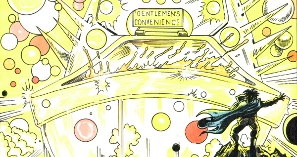

Bix Barton is a sort of upper class detective (master of the rum and uncanny) with a talking cane (Michael Cane) who goes on about rugby (a lot) and battles, well, rum and uncanny things (like a steam train with the face of Margaret Thatcher).
Art by Jim McCarthy
| Story Title | Parts | Pages | w indicates a wraparound coverCovers | Year(s) | Issues | Writer | Artist | Colourist | Letterer |
|---|---|---|---|---|---|---|---|---|---|
| [Barton's Beasts] | 6 | 31 | 663: Jim McCarthy 1 | 1990 | Reprints: X5663-668 | Peter Milligan | Jim McCarthy | [b&w] | Tom Frame |
| The Full English Breakfast | 1 | 6 | 0 | 1990 | SFS13 | Peter Milligan | Jim McCarthy | <-- | Tom Frame |
| The Disproportionate Man | 1 | 8 | 0 | 1990 | WS3 | Peter Milligan | Jim McCarthy | <-- | unknown |
| Carry On Barton | 6 | 34 | 0 | 1991 | Reprints: X5723-728 | Peter Milligan | Jim McCarthy | <-- | Gordon Robson |
| Love Sick World | 5 | 31 | 737: Jim McCarthy 1 | 1991 | 737-741 | Peter Milligan | Jim McCarthy | <-- | Annie Parkhouse |
| The Bloated Case of the Fatted Keef | 6 | 36 | 0 | 1991-1992 | 761-766 | Peter Milligan | Jim McCarthy | <-- | Pat Prentice |
| The Mouth Thief | 1 | 8 | 0 | 1992 | 2KYB'93 | Peter Milligan | Jim McCarthy | <-- | Gordon Robson |
| The Crying Scotsman | 1 | 8 | 0 | 1993 | SFS16 | Peter Milligan | Jim McCarthy | <-- | Annie Parkhouse |
| Nigel - The Napoleon of East Finchley | 6 | 36 | 915: Jim McCarthy 1 | 1994 | 912-917 | Peter Milligan | Jim McCarthy | <-- | Ellie de Ville |
| Violent Night, Holy Night | 1 | 6 | 0 | 1994 | WS6 | Barney Legge | Jim McCarthy | [b&w] | Annie Parkhouse |
| >> Posters / Teasers << | |||||||||
Subtitled: "Master of the Rum and Uncanny".Bix Barton | 1 | 1 | 0 | 1990 | 664 | n/a | Jim Murray | <-- | n/a |
| The Early Cases - "The Curse of Kharis" | 1 | 1 | 0 | 1991 | SFS14 | n/a | Jim McCarthy | <-- | n/a |
| Bix | 1 | 1 | 0 | 1991 | 760 | n/a | Jim McCarthy | <-- | n/a |
Star Scan.[Bix Barton] | 1 | 1 | 0 | 1996 | 1006 | n/a | Jim McCarthy | <-- | n/a |
Star Scan.[Bix Barton] | 1 | 1 | 0 | 1996 | 1013 | n/a | Jim McCarthy | <-- | n/a |
Star Scan.[Bix Barton] | 1 | 1 | 0 | 1996 | 1018 | n/a | Jim McCarthy | <-- | n/a |
Star Scan.[Bix Barton] | 1 | 1 | 0 | 1996 | 1020 | n/a | Jim McCarthy | <-- | n/a |
| >> Floating Covers << | |||||||||
| Ooh, I Say! | ~ | ~ | 1 | 2004 | X5 | n/a | Simon Davis | <-- | n/a |
| year | episodes | pages |
| 1982 | 0 | 0 |
| 1983 | 0 | 0 |
| 1984 | 0 | 0 |
| 1985 | 0 | 0 |
| 1986 | 0 | 0 |
| 1987 | 0 | 0 |
| 1988 | 0 | 0 |
| 1989 | 0 | 0 |
| 1990 | 8 | 45 |
| 1991 | 14 | 83 |
| 1992 | 4 | 26 |
| 1993 | 1 | 8 |
| 1994 | 7 | 42 |
| 1995 | 0 | 0 |
| 1996 | 0 | 0 |
| 1997 | 0 | 0 |
| 1998 | 0 | 0 |
| 1999 | 0 | 0 |
| 2000 | 0 | 0 |
| 2001 | 0 | 0 |
| 2002 | 0 | 0 |
Comic strip data (excludes other content):